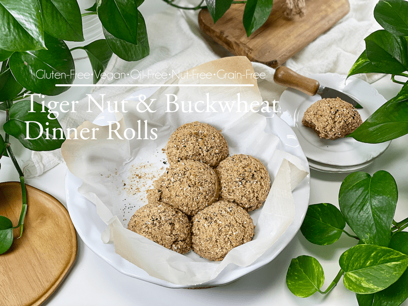
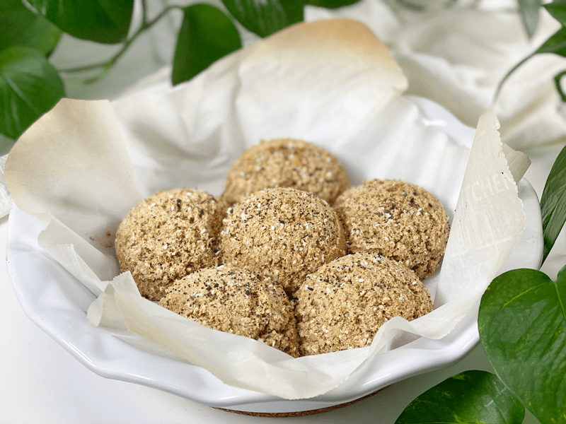
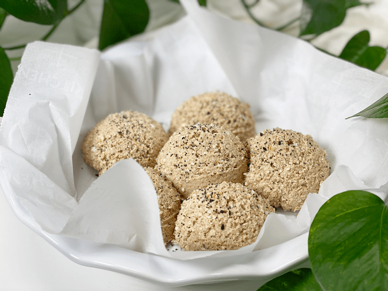
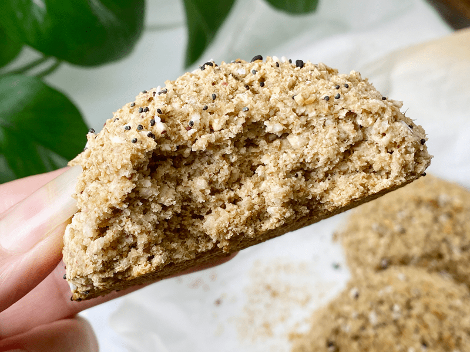

Tiger Nut & Buckwheat Homemade Dinner Rolls | Cooked | Gluten-Free | Vegan
If you’re not a professional baker, making bread can be a laborious process. The beauty of this recipe lies in its health benefits and simplicity. These nutrient-packed dinner rolls are delicious with their savory-sweet, light, and delicate crumbly texture. If you are new to tiger nut flour and buckwheat, it may seem confusing that these rolls are nut-free and gluten-free. Tiger nuts are NOT a nut, they are a tuber; and buckwheat does NOT contain wheat (gluten).

I have been on a roll as of late… a dinner roll, that is. It all started with my Oat and Buckwheat Dinner Rolls, which lead to my Oat and Walnut Dinner Rolls, Quick-Mix Almond Rolls … which bring us here — Tiger Nut and Buckwheat Rolls. Frankly, I LOVE having and offering options when it comes to designing recipes. My hope is to create a recipe that YOU can enjoy too. So, if you don’t eat oats or walnuts, you now have the option of trying out these rolls, which use tiger nut flour as their foundation.
The reason I reached for the large glass container of tiger nut flour is that it is nut-free, gluten-free, and grain-free. Not that I have anything against those, but I also love tiger nut flour for its health benefits. If you have an extra few minutes, I highly recommend that you click (here) to scan over a quick write-up that I did a while back. I have a feeling that it will greatly inspire you to give it a try. With all this attention on the tiger nuts, we can’t forget the good ol’ buckwheat. If you want to learn how it grows, how it’s harvested, and all the different parts of the plant that are used, click (here).

Tiger nut flour can have a slightly gritty texture to it (brand-dependent). I find that it gets lost in this recipe since it is combined with broken-down buckwheat kernels. If this seems like an issue for you, grind it, sift it, grind it, and sift it some more. That ought to help.
The problem (?) with creating all these dinner roll options is that I fall in love with the last batch that I pull out of the oven. So to say that one particular recipe is my favorite–well, it would just be wrong and inaccurate. It’s like asking a parent who their favorite child is. Impossible… they are all wonderful and have unique characteristics. Ready to scan over all the ingredients I used?
Psyllium Husks – Quality Matters
Psyllium husks come in different grades of purity (nothing else added) which affects the color of the husks, which range from brown to off-white color. The higher the purity level, the lighter the psyllium husk. So, whenever you’re purchasing psyllium, look for the highest purity level you can find. Do not omit this ingredient from the recipe, as it works as a binder, along with giving the rolls a bread-like texture.
Here are some high-quality psyllium husk options that I recommend.
Tiger Nut Flour
- If the flour you have on hand is full of lumps and clumps, I would suggest sifting it so you don’t end up with little pockets of flour.
- I recommend the following brand – Premium Organic Tiger Nuts Flour
Plant-Based Milk
- You can use any plant-based milk, just make sure that it is additive-free and unsweetened.
- If you would like to make your own be sure to browse through the dairy-free alternative recipe found (here).
- I used oat milk since it’s what I had on hand.
Vegetable Bouillon Paste & Miso
I used both of these as umami flavor enhancers… translating to a “pleasant savory taste.” Both are optional, and other seasonings can be used to customize the flavor of these dinner rolls. You can replace the bouillon paste with bouillon powder or perhaps with another seasoning.
Chickpea Miso (pronounced mee-so) Paste
- You may feel discouraged to buy a container of miso when this recipe uses only 1 teaspoon. Miso will keep almost indefinitely, so no need to worry about it going bad. I use it all the time in my recipes, as a salt replacement. You might be surprised at how quickly you can go through a container of it.
- Miso offers a nutritious balance of natural carbohydrates, essential oils, minerals, vitamins, and protein of the highest quality, containing all of the essential amino acids.
- There are a lot of varieties of miso on the market, soy being the most common. Miso varies in color from a pale brown to a deep brownish-red. The darker the color, the longer the fermentation process, and the stronger the taste will be.
- If you don’t wish to use miso, you can use 1 teaspoon of sea salt in its place.
Before We Get “Roll”ing
When it comes to making the dinner rolls, it doesn’t matter what size you make them. The only thing that you will need to watch for is the baking time. The smaller you make them, the quicker they will bake. And the larger they are, the more bake time will be required. I use a 1/2 cup cookie scoop to create 5 perfectly sized rolls. Most of the time, I drop them evenly spaced on a baking sheet, but this time around I snugged them up in an oven-safe ceramic dish. It was fun to set it down on the table then pull them apart. It’s the small things in life, right? I hope you enjoy this recipe. blessings, amie sue

Ingredients
Yields 5 (1/2 cup measurement) rolls
Preparation
- Preheat the oven to 450 degrees (F) and line the baking sheet with parchment paper.
- In a small bowl, combine the plant milk and apple cider vinegar; set aside for 10 minutes so it can curdle (think buttermilk).
- I used oat milk in my dinner rolls.
- In a food processor, fitted with the “S” blade, combine the tiger nut flour, buckwheat, psyllium, and baking soda. Process just long enough to start breaking down the buckwheat. I like to basically chop them so that it leaves a little bit of texture to the buns.
- Add the vegetable bouillon and miso, along with the “buttermilk.” Process till well combined.
- Scoop out roll batter onto the parchment paper-lined baking sheet.
- I used a 1/2 cup ice cream/cookie scoop, making sure to level it off.
- I sprinkled Everything Bagel seasoning on top (totally optional).
- Bake for 13 minutes until lightly brown.
- Immediately transfer the rolls to the cooling rack so the bottoms don’t get soggy.
- Store on the counter in an airtight container for roughly 3 days. These also freeze and thaw well.
-

-
Ready for the oven…
-
-
Fresh out of the oven!
-

-
Just a close-up of the inner texture once baked. Enjoy!
© AmieSue.com